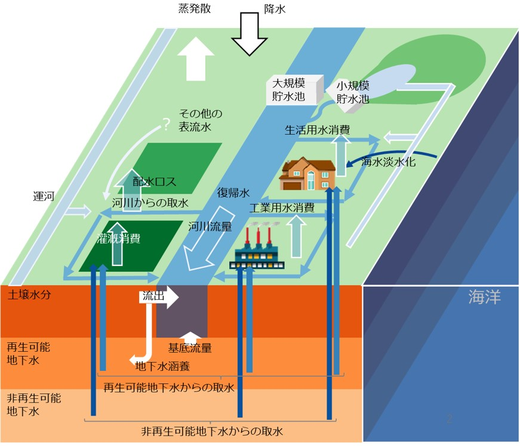

はじめに
H08について
- H08とは国立環境研究所の花崎直太が中心になって開発しているオープンソースの全球水資源モデル（世界の水資源問題に関するコンピュータシミュレーションを実行するためのソフトウエア）です。H08はこれまでに地球の水循環や水資源に関する多くの研究に利用されてきました。主なものとして、(1)貯水池（ダム）が地球の水循環に与える影響を評価したもの、(2)水利用と河川流量の季節性（雨期と乾季）に注目して世界の水不足を評価したもの、(3)農畜産物の輸出入に伴って仮想的に取引される水、いわゆるバーチャルウォーター貿易量を推定したもの、(4)地球温暖化による気候の変化と社会経済の変化が２１世紀の世界の水不足に及ぼす影響を評価したものなどがあります。詳細については「出版物」をご覧ください。
- H08のソースコードはGitHub上で公開されています。[2023/12/1より]

H08の模式図
このサイトについて
- このウェブサイトはH08の利用者のために提供されており、かなり専門的な内容になっています。
- H08の利用を希望する場合は、まず、「出版物」にある論文等をご覧の上、モデルの概念と特徴をご理解ください。次に、「マニュアル」のページから「H08マニュアル利用編」をダウンロードし、必要な計算機資源をご理解ください。その上で利用を決定した場合は、花崎直太までメールを１通送ってください[hanasaki at nies.go.jp]。ソースコードサーバと全球気象データサーバへのアクセス方法をお伝えします。バグと更新の情報や技術的な解説は不定期に「バグと更新」や「よくある質問」に追記されますのでご覧ください。